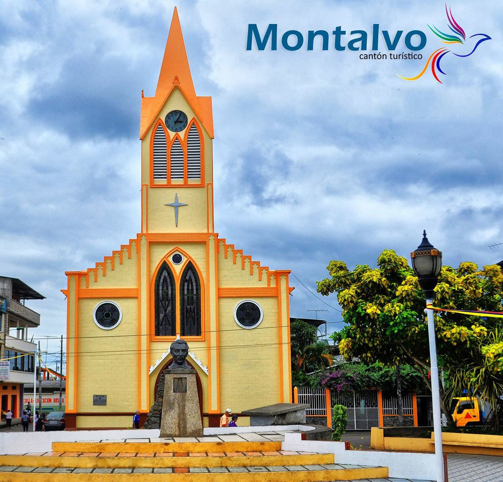

UN PARAISO ESCONDIDO
Cantón Montalvo

Montalvo se encuentra ubicado geográficamente en las estribaciones de la Cordillera Occidental de Los Andes, siendo parte de la Provincia de Los Ríos en la región central del Ecuador, y está situada a 33 km. De la capital provincial Babahoyo, con un nivel sobre el mar de 72 metros, su extensión territorial alcanza a 364,4 km2
Su clima es cálido y húmedo; su temperatura varía entre 27 y 28 grados centígrados. En verano es fresco. El período de lluvias comprende de diciembre a mayo, y la estación seca de junio a diciembre, con lluvias inconspícuas en forma de garúa que cae en período seco.